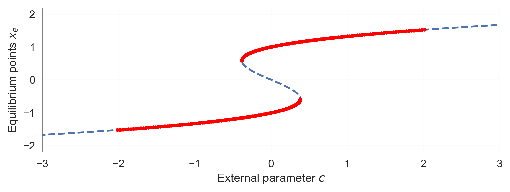

import numpy as np
import matplotlib.pyplot as plt
from ipywidgets import interact, interactive
import matplotlib.style as style; style.use('seaborn-v0_8')
plt.rcParams['figure.figsize'] = (7.8, 2.5); plt.rcParams['figure.dpi'] = 300
color = plt.rcParams['axes.prop_cycle'].by_key()['color'][0] # get the first color of the default color cycle
plt.rcParams['axes.facecolor'] = 'white'; plt.rcParams['grid.color'] = 'gray'; plt.rcParams['grid.linewidth'] = 0.25; 3 Tipping elements
Wolfram Barfuss | University of Bonn | 2025/2026 | >> Open the latest version on the >web<, >Github< or in >GoogleColab< <<
▶ Complex Systems Modeling of Human-Environment Interactions
3.1 Motivation
Think of the term “tipping point” in the context of sustainability. What do you associated with it? What does it mean? What are examples of tipping points in the context of human-environment interactions?
Tipping points, elements and regime shifts
The concepts of tipping elements and regime shifts are closely related aspects of complex systems dynamics. While tipping elements refer more to the components of a system with the potential for abrupt change, regime shifts refer more to the actual transitions that occur when these elements cross their critical thresholds. Also, the term tipping elements is used more in the context of Earth system science, while regime shifts are used more in the context of social-ecological systems.
Climate tipping risks
Climate tipping points are thresholds in the Earth’s climate system that, such as a slight increase in global average temperature, when crossed, can lead to significant and potentially irreversible changes. These changes can trigger reinforcing feedback loops that push the system into a new equilibrium, potentially leading to severe consequences like accelerated ice melt or shifts in ocean currents. For instance, the collapse of the West Antarctic ice shelves is a potential climate tipping point that could lead to substantial sea level rise and other impacts. While some tipping points may be triggered within the 1.5-2°C Paris Agreement range, many more become likely at 2-3°C of warming (Armstrong McKay et al., 2022).
Global Tipping Points
While climate tipping points are specific to the Earth’s climate systems and their feedback mechanisms, global tipping points (Lenton et al., 2023) consider a wider array of interconnected systems, including human and ecological dimensions, highlighting the complex interplay between natural and societal changes. Natural tipping points may occur over the entire Earth system, from the Biosphere to the Cryosphere, the Oceans and the Atmosphere.
Currently, several major tipping points are at imminent risk due to global warming, with more projected as temperatures rise above 1.5°C. The cascading effects of these negative tipping points could overwhelm global social and economic systems, outpacing some countries’ adaptive capacities. Addressing these crises requires a transformative shift away from incremental changes towards a robust global governance framework that prioritizes rapid emission reductions and ecological restoration.
Challenges
So what exacltly are tipping elements and regime shifts?
How can we identify them?
And how can we manage them?
Here, the mathematics of bifurcations can help.
Learning goals
After this chapter, students will be able to:
- Explain the concept of a bifurcaton and how it relates to tipping points and regime shifts.
- Explain a simple dynamic system to model a tipping element or regime shift.
- Explain what an attractor, transient, basin of attraction and separatrix are.
- Conduct a bifurcation analysis in a simple dynamic system using Python.
- Construct a potential function and explain its role in bifurcation analysis.
- Explain and recognize hysteresis and its consequences for sustainability transitions.
3.2 Bifurcations | The mathematics of tipping elements
The key question bifurcation theory addresses is: How does the system’s long-term behavior depend on its parameters?
The distinction between a system’s state and its parameters is crucial. The state of a system is the set of variables that describe the system at a given time, while the parameters are the constants that define the system’s behavior.
Often, a small change in parameter values causes only a small or even no quantitative change in the system’s state. However, sometimes, a slight change in parameter values causes a drastic, qualitative change in the system’s behavior.
A bifurcation is a qualitative, topological change of a dynamic system’s phase space that occurs when some parameters are slightly varied across their critical thresholds.
Here, we cover the very basics of bifurcation theory in dynamic systems. These provide a rich understanding of tipping points and regime shifts in the sustainability sciences.
We start by importing the necessary libraries and setting up the plotting environment.
We also inlcude some keys functions to simulate dynamic systems from 02.01-Nonlinearity.
To run the model we copy and refine an iterate_model function.
def iterate_model(nr_timesteps, initial_value, update_func, **update_params):
stock = initial_value
time_series = [stock]
for t in range(nr_timesteps):
stock = update_func(stock, **update_params)
if np.abs(stock)>10e9: break # stop the simulation when x becomes too large
time_series.append(stock)
return np.array(time_series)We also copy define a plot_stock_evolution function, plotting the stock evolution.
def plot_stock_evolution(nr_timesteps, initial_value, update_func,
**update_parameters):
time_series = iterate_model(nr_timesteps, initial_value,
update_func, **update_parameters)
plt.plot(time_series, '.-', label=str(update_parameters)[1:-1]);
plt.xlabel("Time steps"); plt.ylabel("System state");
return time_seriesAnd last, we copy the cobweb plot function over.
def cobweb(F, x0, params, iters=10, ax=None):
h=[x0]; v=[x0]; x=x0 # lists for (h)orizontal and (v)ertical points
for _ in range(iters): # iterate the dynamical system
x_ = F(x, **params) # get the next system's state
if np.abs(x)>10e9: break # stop the simulation when x becomes too large
h.append(x); v.append(x_) # going vertically (changing v)
h.append(x_); v.append(x_) # going horizontially (changing h)
x = x_ # the new system state becomes the current state
fix, ax = plt.subplots(1,1) if ax is None else None, ax # get ax
ax.plot(h, v, 'k-', alpha=0.5) # plot on axv
if np.allclose(h[-2],h[-1]) and np.allclose(v[-1],v[-2]):
# if last points are close, assume convergence
ax.plot([h[-1]], [v[-1]], 'o', alpha=0.7) # plot dot
return h, vA minimal model of tipping elements
Let \(x\) denote the property of a system we are interested in, such as the amount of ice in the Arctic, the population of a species, or the fraction of a lake’s surface coverd by vegetation (Scheffer et al., 2001). Thus, we describe the system’s state over time \(t\) by \(x_t\).
Conceptually, the system’s dynamics are influenced by a reinforcing feedback loop, a balancing feedback loop, an external influence \(c\). The exertnal influence \(c\), for example, represents the global mean temperature in the case of climate tipping elements, or the level of nutrients in the example of a lake regime shift.

A simple mathematical representation of such a system has the difference euqation,
\[\Delta x = (x - ax^3 + c) \frac{1}{\tau},\]
where \(\tau\) represents the typical time scale of the system, and thus, inverse strength of the system’s change, and \(a\) is a parameter that determines the strength of the balancing feedback loop in relation to the reinforcing feedback loop (with unit stength).
We define the update_stock function, \(F(x_{t}\) for the udpate \(x_{t+1}=F(x_t)\), to iterate the stock \(x\) according to the difference equation above.
def F_tipmod(x, c, a=1, tau=10): return x + (x - a*x**3 + c)/tauWe explore the stock’s evolution over time from two different initial conditions by iterating the model for 200 time steps.
def compare_initial_conditions(nr_timesteps=200, c=0.0, tau=50, a=1):
plot_stock_evolution(nr_timesteps, 1.2, F_tipmod, c=c, tau=tau, a=a);
plot_stock_evolution(nr_timesteps, -1.2, F_tipmod, c=c, tau=tau, a=a);
paramstring = f"c={c}, tau={tau}, a={a}"
plt.gca().annotate(paramstring, xy=(0, 1.0), xycoords='axes fraction', va='bottom', ha='left'); plt.show()compare_initial_conditions()We observe bi-stability. Depending on where the dynamical system starts, it will either converge to the fixed point \(x_e = 1.0\), or the the fixed point \(x_e = -1.0\)
How do the parameters influence the system’s evolution? We can convince ourselves that the timescale parameter \(\tau\) determines the speed of the system’s evolution (vary \(\tau\) and the total number of simulation staps proportionally: the curves’s shapes look identical). The parameter \(a\) scales the system’s fixed points (vary \(a\) and observe the system’s behavior). Finally, We can also observe, that the external influence \(c\) can change the system’s equilibrium state. Run this notebook interactivly and confirm these observations for yourself!
Cobweb plot
Let us observe thhis phenomenon of bi-stability in a cobweb plot.
def cobweb_plot(c=0, tau=1.5, a=1):
xs = np.linspace(-2,2,101); plt.xlabel('x'); plt.ylim(-1.3,1.3); plt.xlim(-1.6,1.6);
plt.plot(xs, F_tipmod(xs, c,a,tau), label='F(x)');
plt.plot(xs, xs, label='x', color='k', alpha=0.5); plt.legend();
cobweb(F_tipmod, x0=0.3, params=dict(c=c, a=a, tau=tau), iters=100, ax=plt.gca());
cobweb(F_tipmod, x0=-0.3, params=dict(c=c, a=a, tau=tau), iters=100, ax=plt.gca());cobweb_plot()We see, that it depends on where the update function \(F(x_t)\) intersects the diagonal line \(y=x\) whether an inital condition converges to the fixed point \(x_e = 1.0\) or \(x_e = -1.0\). The external influence parameter \(c\) determines this intersection point
Some definitions.
An attractor is a set of states toward which a dynamic system tends to evolve over time. These states represent the system’s long-term behavior. Once the system reaches an attractor, it typically remains there. For example, in the system above the attractors are the fixed points \(x_e = 1.0\) and \(x_e = -1.0\).
A transient refers to the behavior of a system during a limited period of time before it reaches an attractor. For example, the cobweb plot shows the transient behavior of the system.
A basin of attraction the set of all the initial states from which you will eventually end up falling into that attractor. For example, in the system above, the basin of attraction for the fixed point \(x_e = 1.0\) are all point greater than the intersection point between \(F(x_t)\) and \(y=x\). The basin of attraction for the fixed point \(x_e = -1.0\) are all points less than the intersection point between \(F(x_t)\) and \(y=x\).
If there are more than one attractor in the phase space, you can divide the phase space into several different regions. In this case, a separatrix is the boundary between distinct basins of attractions. For example, in the system above, the separatrix consists only of the intersection point between \(F(x_t)\) and \(y=x\).
Empirical bifurcation diagram
A bifurcation diagram is a powerful tool to visualize the system’s long-term behavior as a function of its parameters. To create a bifurcation diagram, we iterate the model for a range of parameter values and plot the system’s equilibrium states.
def simulate_bifurcation_diagram(F, x0s, params, iters=1000,
cextent=[-0.5,0.5], pointsize=2.0):
c_s = np.linspace(cextent[0], cextent[1], 501) # The external parameter to be varied
for x0 in x0s: # Loop through all initial conditions
endpoints = [] # Container to store the endpoints
for c in c_s: # Loop through all external parameter values
trj = iterate_model(iters, x0, F, c=c, **params) # Simulate the system
endpoints.append(trj[-10:]) # Taking the last 10 points of the trajectory
# Plotting the endpoints
cpoints = [[c_s[i]]*l for i, l in enumerate(map(len, endpoints))] # create cpoints that may work for different endpoint lengths
plt.scatter(np.hstack(cpoints), np.hstack(endpoints), c='k', alpha=0.5,
s=pointsize); # np.hstack unpacks everything
plt.ylabel(r'Equilibrium state $x$'); plt.xlabel(r'External influence $c$')simulate_bifurcation_diagram(F_tipmod, x0s=[-1.5, 1.5], params=dict(tau=10 , a=1.0), iters=1000)This empirical bifurcation diagram allows us to identify the system’s stable fixed points as a function of the parameter \(c\). We observe the range of parameter values for which the system converges to the fixed points around \(x_e = 1.0\) and \(x_e = -1.0\), as well as the range where the system is bi-stable. We also observe the critical values of \(c\) where the system undergoes a qualitative change in its behavior. When the external parameter \(c\) changes around these critical values in \(c\) (close to \(-0.4\) and \(0.4\) here), a tiny change causes a drastic effect on the system state.
3.3 Conducting a bifurcation analysis
Local bifurcations occur when the stability of an equilibrium point changes between stable and unstable.
- Determine the equilibirum points in dependence of the model parameters
- Determine the stability of the equilibirum points in dependence of the model parameters. For one-dimensional systems \(x_{t+1} = F(x_{t}),\) an equilibrium point is stable when \(|F'(x_e)| < 1\).
- Bifurcations occur at parameter values at which the stability changes. For one-dimensional systems \(x_{t+1} = F(x_{t})\), local bifurcations occur when \(|F'(x_e)|=1\).
Step 1 | Equilibrium points
The equilibrium points for \(\Delta x = \frac{1}{\tau}(x - ax^3 + c)\) fulfill,
\[c = ax^3 - x.\]
It is not straightforward to solve the equation, \(c=ax^3-x\), analytically, i.e., to give an expression for how the system’s equilibirum depends on the parameters \(c\) and \(a\). However, we can plot the parameter \(c\) as a function of the equilibirum points \(x_e\) and the parameter \(a\).
def plot_equilibirum_points_tipmod(a=1.0, cextent=[-2.0,2.0]):
xe=np.linspace(-2.0,2.0,501) # equilibrium points
c = a*xe**3 - xe # parameter c
plt.plot(c, xe, "--"); # plot
plt.xlabel(r'External parameter $c$'); plt.ylabel(r'Equilibrium points $x_e$');
# plt.xlim(cextent); plot_equilibirum_points_tipmod()Step 2 | Stability
Computing the derivative of the update function \(F(x_t) = x + \frac{1}{\tau}(x - ax^3 + c)\) , we find,
\[\frac{dF}{dx} = 1+\frac{1}{\tau} (1 - 3ax^2).\]
We create a Python function to plot the whether an equilibrium point is stable or not using the np.logical_and function.
def plot_stability_tipmod(a=1.0, tau=3.0, cextent=[-3.0,3.0]):
xe=np.linspace(-3, 3, 1001) # equilibrium points
c = a*xe**3 - xe # parameter c
def F_(x, a,tau): return 1 + (1-3*a*x**2)/tau
cond=np.logical_and(F_(xe, a,tau)<1, F_(xe, a,tau)>-1)
plt.plot(c[cond], xe[cond], ".", c='red')
plt.xlabel(r'External parameter $c$'); plt.ylabel(r'Equilibrium points $x_e$');
plt.xlim(cextent); Brining stability and equilibrium points together, we can plot an analytical bifurcation diagram.
a = 1.0; tau=3.0
plot_stability_tipmod(a=a, tau=tau)
Step 3 | Bifurcation diagram
Bringing equilibrium points and stability togehter, we obtain our analytical bifurcation diagram.
def plot_analytical_bifurcation_tipmod(a = 1.0, tau = 3.0, extent=3.0):
plot_equilibirum_points_tipmod(a=a, cextent=[-extent, extent]);
plot_stability_tipmod(a=a, tau=tau, cextent=[-extent, extent]);a = 1.0; tau = 3.0
plot_analytical_bifurcation_tipmod(a = a, tau = tau, extent=1.0)
Lastly, we can compare the empirical bifurcation diagram with the analytical bifurcation diagram, and observe that both match perfectly.
a = 1.0; tau = 3.0
plot_analytical_bifurcation_tipmod(a = a, tau = tau, extent=2.0)
simulate_bifurcation_diagram(F_tipmod, x0s=[-0.5, 0.5], params=dict(tau=tau , a=a),
iters=500, pointsize=30, cextent=[-2.0, 2.0])
Our bifurcation analysis produces the same diagram we observed in the literature. What is still missing is the changing stability landscape portrayed in Figure 3.1?
3.4 Potential function
A potential is a function that describes the energy of a system. In the context of dynamic systems, a potential function can help us understand the system’s behavior by visualizing the system’s energy landscape.
In general, there are multiple ways to define a potential function. Here, we define a potential function \(G\) as the negative integral of the system change \(\Delta x\). Thus, for a system \(x_{t+1} = F(x_{t}) = x_{t} - \left.\frac{G(x)}{dx}\right|_{x=x_{t}}\), we have
\[\Delta x = - \frac{G(x)}{dx}.\]
The idea is, that the system changes as if rolling downard (according to the first derivative of) the potential landscape \(G(x)\).
Thus, for the difference equation \(\Delta x = \frac{1}{\tau}(x - ax^3 + c)\), we have
\[G(x) = - \frac{1}{\tau} \left(\frac{1}{2}x^2 - \frac{1}{4}ax^4 + cx\right).\]
Converting this into Python yields,
def G_tipmod(x, c,a,tau): return - (x**2/2 - a*x**4/4 + c*x)/tauwhich we use in a plot_potential function to visualize the potential landscape.
def plot_tipmod_potential(c=0.2, a=1.0, tau=2):
xs=np.linspace(-2,2,501); plt.ylim(-0.5, 0.5);
plt.plot(xs, G_tipmod(xs, c,a,tau), color='blue')
plt.ylabel(r'Potential $G(x)$'); plt.xlabel(r'System state $x$')
# numerically find and plot equilibrium points
c_ = a*xs**3 - xs
xeq = xs[np.isclose(c_-c, 0.0, atol=0.02)]
plt.plot(xeq, G_tipmod(xeq, c, a, tau), 'o', ms=12, color='k')plot_tipmod_potential();
Finally, we bring all pieces together to visualize the system’s potential landscape, bifurcation diagram and time evolution.
def plot_all_tipmod(c=0.2, a=1.0, tau=2):
fig = plt.figure(figsize=(9, 4))
fig.add_subplot(221)
plot_tipmod_potential(c=c, a=a, tau=tau)
fig.add_subplot(222)
plot_analytical_bifurcation_tipmod(a=a, tau=tau, extent=1.4)
plt.plot([c,c], [-2,2], "-", color='black')
fig.add_subplot(313)
compare_initial_conditions(nr_timesteps=50, c=c, tau=tau, a=a)plot_all_tipmod();
3.5 Hysteresis
The last phenomenon we want to explore is hysteresis. Hysteresis occurs when the system’s behavior depends on its history, i.e., the system’s current state depends on its past states.
We let our tipping element model iterate until it reaches an equilibirum point and then slighlty change the external influence parameter \(c\).
- We start from a low value of external influence parameter \(c\) such that the system equilibriates toward the negative equilibrium point and then increae \(c\) into the range where only the positive equilibrium point is stable.
- Then, we decrease \(c\) back to the range where only the negative equilibrium point is stable.
def plot_hysteresis():
x=-1; xs = [] # inital condition and container for the system state
cvs = np.linspace(-0.8, 0.8, 101); # values of parameter a to go through
cvs = np.concatenate((cvs, cvs[::-1])); # first we go up, then we go back down
for c in cvs: # looping through all parameter values
for _ in range(100): x=F_tipmod(x, c=c, a=1.0, tau=2.0); # iterating the system 100 times
xs.append(x); # storing the last system state
plt.plot(cvs, xs,'-',alpha=0.5, color='gray',zorder=-1) # Plot background line
plt.scatter(cvs, xs, alpha=0.9, s=np.arange(len(cvs))[::-1]+1, c=np.arange(len(cvs)), cmap='viridis'); # Colorful plot
plt.xlabel(r"Influence parameter $c$"); plt.ylabel(r"System state $x$");plot_hysteresis()
Time moves from large to small and dark to light dots.
Hysteresis is not only a theoretical construct. It occurs in many practical real-world domains from physics, chemistry, engineering, biology, to economics.
The hysteresis of the Antarctic Ice Sheet refers to the phenomenon where the ice sheet’s response to temperature changes is not symmetric; i.e., the thresholds for ice growth and decline differ significantly (Figure 3.2). This behavior has critical implications for understanding future sea-level rise under global warming scenarios.
The Antarctic Ice Sheet exhibits multiple temperature thresholds, beyond which ice loss becomes irreversible. For instance, at 2°C warming, West Antarctica faces long-term partial collapse due to marine ice-sheet instability. A significant loss of over 70% of the ice volume is anticipated with 6 to 9°C warming, primarily driven by surface elevation feedback (Garbe et al., 2020).
3.6 Learning goals revisited
- The mathematics of bifurcations is the foundation of the tipping points and regime shifts concepts. Small changes in system parameters can lead to substantial shifts in system behavior.
- We introduced a simple dynamic system model to represent a tipping element or regime shift, highlighting the concepts of attractors, transients, basins of attraction, and separatrices.
- We conducted a bifurcation analysis, demonstrating how a system’s behavior changes as we adjust critical parameters around tipping points.
- We constructed a potential function and examined its role in bifurcation analysis. It highlights where attractors are located and how the system may transition between states.
- We discussed the phenomenon of hysteresis and its implications for sustainability transitions. It describes the history- or path-dependent behavior of a system, where returning to an original state may require more than simply reversing parameter changes.
In the exercises for this lecture, you will conduct bifurcation analyses of three different systems.
Social tipping points
to the rescue?
Simultaneously, it’s crucial to identify and harness positive tipping points, where beneficial changes can become self-sustaining, potentially offsetting some negative impacts. There is an urgent need to build resilient societies capable of withstanding impending challenges and seizing opportunities for sustainable progress. The paradigm of ‘business as usual’ is obsolete; instead, a proactive approach to governance and global cooperation is essential to navigate towards a sustainable future, leveraging both the threats and opportunities posed by tipping points (Lenton et al., 2023).